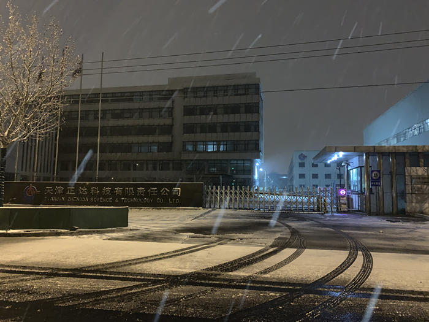
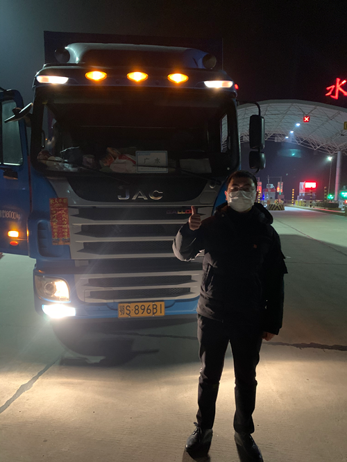

特写|13小时狂奔1011公里 32.5吨疫情防控物资驰援湖北全纪实-中经实时报-中国经营网
原文链接 备份链接 特写|13小时狂奔1011公里 32.5吨疫情防控物资驰援湖北全纪实 2020-01-28 19:14 作者：张家振 来源：中国经营网 本报记者 张家振 武汉摄影报道 “疫情防控物资全部安全送达，可以松一口气了。”1 …
42个小时，2300公里的12吨84消毒液接收之路丨武汉肺炎亲历
2020-02-06 20:18 作者：李静 来源：中国经营网
本报记者 李静 湖北广水报道
2月2日凌晨3点，共青团广水市委干部陆伟和两名志愿者司机张耀清、刘宗文驾驶的大货车到达天津市西青区芦北口服务区，这是距离天津正达科技有限公司（以下简称“天津正达”）最近的服务区。
在服务区停下车，疲惫的两名司机在驾驶室后排睡着了，陆伟蜷在副驾驶室守候了一夜。夜渐深车窗被三个人呼出的暖气笼罩上了一层雾气，陆伟却感觉脚和腿越来越冷，为了不影响两名司机的休息，他尽量保持着同样的姿势。等到早上五点多两名司机醒来，陆伟才发现窗外已经覆满皑皑白雪。

陆伟和两名志愿者司机来自1100公里以外的湖北省广水市。根据随州市发布的截至2月4日24时的统计数据，随州市确诊病例706例，其中下属的广水市确诊病例178例，死亡两例。辖区人口约95万人的广水市，只有两家纳入三级医院管理的二级医院，剩下的是乡镇卫生院。
疫情告急，广水市防疫工作的多项医疗防护物资也纷纷告急，陆伟告诉《中国经营报》记者，三人驰行千里是为了拿到天津正达捐赠的10吨84消毒液。
往返于广水至天津的急行军
天津正达是中海油天津化工研究设计院全资子公司、国家工业水处理工程技术研究中心产业化基地，以开发和生产工业水处理药剂、油田化学品、石油化工催化剂、汽车尾气催化净化产品、无机精细化学品为主。
疫情爆发之后，天津正达停掉了所有的生产线，全力生产防疫工作的紧缺物资84消毒液，并无偿捐赠给湖北疫区使用。
“广水市青年企业家殷凯的姐姐就在中海油工作，正月初六（1月30日）了解到这条捐赠消息之后，就紧急和天津正达联系，核实双方信息。”陆伟回忆到，10吨84消毒液资源对广水来说不是小数目，广水市新型冠状病毒感染的肺炎防控指挥部（以下简称“指挥部”）分管领导知道之后非常重视，初七（1月31日）一天协调好所有的证明资料，并且由广水市邮政部门协调了一辆中通大货车和两位极有经验的志愿货车司机。
陆伟是初七晚上十点临时接到的任务，由他和两位65后的志愿者司机一同前往天津处理捐赠事宜。傍晚接到任务的陆伟意识到任务的重要性，第二天一早收拾了一套一次性洗漱用品，赶往指挥部拿到相关捐赠证明材料，汇合了两位司机便出发上路了。
从湖北省广水市出发，在高速上需穿越鄂豫、豫冀、津冀三个省级交界处才能抵达天津市。“交警会主动过来给我们测量体温，问清我们是接受捐赠的车辆，查看相关证明之后，就让我们插队走了绿色快速通道。”陆伟回忆着过省界时候的情形。
大货车走不快，为了以最快的速度抵达天津并返回，除了加油等必须停车的情况，两位司机坚持人停车不停的原则在高速上疾驰。三人泡面、吃面都是在疾驰行驶的驾驶室后座完成。
耗时16个小时，陆伟一行三人抵达天津市西青区芦北口服务区。“在路上住宾馆就要隔离14天，我们哪有那个时间。”陆伟把驾驶室后排可以睡觉的区域和车上的被子让给了两位司机，一个人在副驾驶座上守候了大半夜，“去的时候因为开了空调，车子里面还比较暖和。大概过了一会儿，就感觉一个字——冷，脚冷、腿冷。为了不影响两位司机，我尽量保持一个姿势，后来就感觉浑身酸胀。”
能装多少装多少
只睡了四五个小时，2月1日凌晨五点，两个司机就起床了，摇下车窗外面已经被皑皑白雪覆盖。在服务区简单洗漱，陆伟三人匆匆赶到了天津正达。“他们八点半上班，我们担心去领捐赠物资的车辆太多，所以早点去排队。”陆伟告诉记者，“中海油这边的捐赠手续特别简单，我们拿出捐赠协议证明真实性，他们的库管填好出库单就可以装货。一路绿灯。”
据了解，双方原本协商的捐赠数量是10吨84消毒液，但中海油天津化工研究设计院院长听说陆伟一行从大老远的湖北赶来，就直接说：“能装多少装多少。”
对于院长的慷慨，陆伟三人特别高兴，一箱一箱用钢筋保护好的消毒液被叉车送进货车车厢，原本准备装10吨的消毒液，最后整整装了18吨。
“我们希望能多带一些84消毒液回去，但装了18吨发现轮胎已经压扁了。车子虽然能跑，但可以看到前面的驾驶室离轮胎的距离只剩下2厘米。”陆伟三人商量了一下，为了安全起见，决定减少载重。
在装货和卸货期间，两位驾驶技巧老道、经验丰厚的老司机一直在观察轮胎的变化，最后决定载着12吨84消毒液运回广水。
2月1日上午10点28分，陆伟一行返程。因为载重增加，车速比来的时候更慢了，为了尽快回到广水，依然是人歇车不歇的赶路。95后的陆伟一直没有歇息，他除了要给司机导航，还需要和司机聊天解乏。直到2月2日凌晨四五点的时候，距离广水就100多公里的路程的时候，两位司机劝说两天两夜没有睡觉的陆伟到驾驶室后排去休息一下。“最后两个小时我实在是顶不住了，他们也劝我说，‘不用担心，我们两个聊天，你睡会儿。”陆伟说道。

2月2日早上7点左右，陆伟一行安全回到广水市。整个行程总耗时42个小时， 12吨84消毒液从天津安全运抵广水市指定仓库。陆伟告诉记者：“按照捐赠方中海油的意愿，这批物资首先倾向于医院和基层，市区、大型的商城等地方在满足医院和基层需要之后再由市指挥部统一安排。”
（编辑：张靖超 校对：翟军）
* 除《中国经营报》署名文章外，其他文章为作者独立观点，不代表中国经营网立场。
* 未经本网授权，任何单位及个人不得转载、摘编或以其它方式使用上述作品，违者将被追究法律责任。
* 凡本网注明“来源：中国经营网” 或“来源：中国经营报-中国经营网”的所有作品，版权均属于中国经营网（本网另有声明的除外）。
* 如因作品内容、版权和其它问题需要同本网联系的，请在30日内进行。
* 有关作品版权事宜请联系：010-88890046 邮箱：banquan@cbnet.com.cn
原文链接 备份链接 特写|13小时狂奔1011公里 32.5吨疫情防控物资驰援湖北全纪实 2020-01-28 19:14 作者：张家振 来源：中国经营网 本报记者 张家振 武汉摄影报道 “疫情防控物资全部安全送达，可以松一口气了。”1 …
原文链接 备份链接 武汉140公里以外：一天隔离50人，除夕夜接诊护士没有防护服丨武汉肺炎亲历 2020-01-25 22:47 作者：李静 来源：中国经营网 本报记者 李静 湖北广水报道 一天之内隔离50人，这对于广水市第一人民医院院办 …
原文链接 备份链接 【财新网】（记者 包志明）2月3日下午16时，31岁的货车司机王辉在上海浦东机场附近的货仓装满物资，就和弟弟的车一前一后驶上了开往武汉的救援之路。 因为新冠肺炎疫情的发展，武汉已经“封城”11天，900万武汉居民的 …
原文链接 备份链接 经济观察网 见习记者 程璐洋 2月4日，经济观察网从湖北省新型冠状病毒感染肺炎疫情防控指挥部和湖北省卫生健康委员会获悉，湖北省红十字会、慈善总会和青少年发展基金会3家机构接收的非定向捐赠医疗防控物资分配方案明确。 湖北 …
原文链接 备份链接 关注并星标消费新声 不错过泛消费任何最新动态 _ _ _ 灾情尤其是规模性的疾病惯于与大城市如影随形，而“城市会因为一些人的腐败而蒙羞”，但对于这些生活于斯的武汉人来说，「不管政府做了什么，人们对自己出生或者成长的地方 …